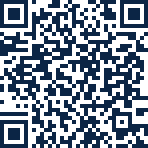

👋
Say hello
Tell HydraTap what to call you. Your name stays on your phone and is only used for a friendly greeting.
HydraTap is a calm, offline-first water tracker. Stick a small NFC sticker on your bottle, tap your phone on it, and a drink is logged — even when the app is closed.
For Android phones with NFC. Not available for iPhone.
Pick a card to learn more.
A working preview of the app. Tap the sticker, close the app, try a stranger tag, or switch to History.
Thursday, 5 November
Good morning,
Friend
Today's sips
History
HydraTap is closed. Tap the sticker anyway!
Your bottle's NFC sticker — tap it, or press T
Closed-app taps are logged in the background.
About 8 taps to reach 2 L
Onboarding walks you through five friendly steps.
Tell HydraTap what to call you. Your name stays on your phone and is only used for a friendly greeting.
Choose from presets — 1.5 L, 2 L, 2.5 L, 3 L, 3.5 L — or fine-tune with the stepper. You can change it later without touching your history.
How much is one sip from your bottle? From 150 ml up to 1 L. HydraTap tells you roughly how many taps it takes to reach your goal.
Stick a blank NFC sticker (NTAG213/215/216 or MIFARE Ultralight) on your bottle, then tap once. HydraTap remembers its hardware ID and ignores every other tag.
Pick how often and between which hours you'd like a gentle nudge — or skip reminders entirely. That's it, you're ready to tap.
Drag the controls to see when HydraTap would remind you today.
Free, open source and ad-free. The APK is built automatically from the source code by GitHub Actions.

On a computer? Scan with your Android phone to download.
No. HydraTap is available for Android only, as a downloadable APK. There is no App Store or iPhone build.
Common NFC stickers — NTAG213, NTAG215, NTAG216 and MIFARE Ultralight. For closed-app logging, use a blank sticker: if a sticker holds a website link, Android sends the tap to your browser first. In-app taps work with any sticker.
With the screen off, Android doesn't power the NFC reader, so no app can read tags. On the lock screen, it depends on your phone: on Android 12+ you can turn off Require device unlock for NFC under Settings → Connected devices → Connection preferences → NFC (Samsung: Connections → NFC).
Yes. Manual logging switches on automatically on devices without NFC, so you can add drinks with a button. You still get the animated bottle, reminders and history.
Android shows this for any app installed outside the Play Store. The APK is built from the public source code by GitHub Actions, so you can see exactly what's in it. Allow "Install unknown apps" for your browser to continue.
Another app (often the system tag viewer) claimed the sticker first. If Android asks which app to use, choose HydraTap → Always. You can also check the sticker under Settings → Tap check inside the app.
No. There's no account and no server, and the app makes no network requests. Your data lives only on your phone.